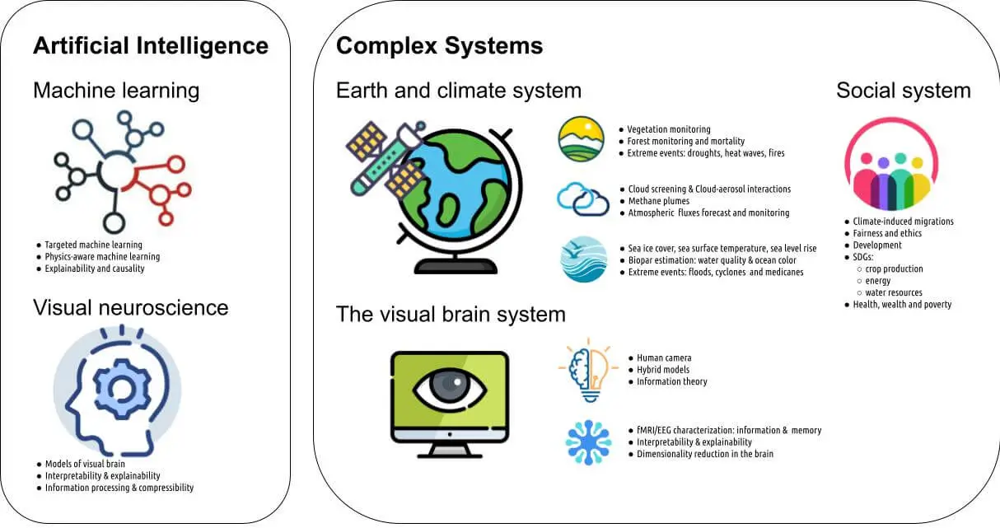

Complex systems are ubiquitous: from the Earth's global climate and the human brain, to society and economic systems. The analysis and characterization of complex systems is very challenging: many processes are involved, exhibiting highly nonlinear, dynamic, and networked relations. Different physical, chemical and biological processes interact in several spheres, and at diverse spatio-temporal scales.
When data and domain knowledge are available, exploiting regularities through statistical machine learning is certainly an outstanding opportunity.
Our ambition is to develop novel artificial intelligence methods for modeling and understanding complex systems, with particular focus on the Earth, Climate, Brain and Society systems, in isolation and interaction. We want to infer how the systems work from observational data analysis, models, and domain knowledge. A perfect storm is over us: (i) an ever increasing amount of observational data, acquired by all types of sensory systems (from fMRI and biosignal records, to satellite sensors and social network tracking devices), (ii) improved Earth-Climate-Brain mechanistic models capable of resolving processes at higher resolution, accuracy and detail, and (iii) advanced machine learning techniques able to extract patterns and identify drivers from data. In the last decade, machine learning models have helped to analyze and characterize complex systems. ML has helped to monitor and better understand land, oceans, and atmosphere along with their interactions, to explain the emergence of connections and specific behaviors in the brain, and to explain societal and economical relations and impacts.
Current AI approaches, however, face three important challenges: (1) they cannot deal efficiently with the particular characteristics of data, (2) they do not respect the most elementary laws of physics like mass or energy conservation, and (3) they just interpolate but no fundamental principle is learned from data. We tackle these three issues by designing algorithms able to deal with huge amounts of complex, heterogeneous, multisource, and (un)structured data:
The theoretical developments are guided by the challenging inherent ventures in all three complex systems: Brain, Earth-Climate and Society. We focus on developing novel AI methods for modeling and understanding complex systems. Methods that are consistent, robust and trustworthy, and that are ultimately able to discovery causal relations from data and assumptions at both local cell/cortex level, regional and continental scales of societal interactions, and global planetary scales in space and time. Our long-term vision is tied to opening new frontiers and driving research towards algorithms capable of discovering knowledge from data, a stepping stone before the more ambitious far-end goal of machine reasoning in complex systems.
Our overarching goal of is to go beyond mere data fitting and advance towards the more significant achievement: learning and understanding the processes through advanced AI techniques, model simulations and domain knowledge. The ideas have been well-received and supported by the EU excellence science pillars (ERC-USMILE, H2020-DeepCube and H2020-XAIDA, Marie Curie iMIRACLI), and are being adopted by different communities in the Brain, Earth, Climate, and Social sciences as well. Our research agenda (AI, hybrid physics-aware ML modeling, abstraction, understanding rather than fitting, explainability and observational causal discovery) are not only timely but urgent in the current context of a big data deluge.
The activities in ISP involve strong interactions between the theoretical and the complex systems pillars, see figure below. A theoretical component, led by ISP in the interplay between machine learning and visual neuroscience feeds case studies of complex systems, most notably the Earth and climate system, the visual brain and the biosphere-anthroposphere interactions. Follow the links above to learn more details about the specific goals, proposed methodology, group collaborations, related projects, and applications in the particular case studies.

Our research agenda for the 2020-2030 follows the tradition and expertise of the team over the last 20 years on remote sensing data analysis and visual neuroscience, and tackles more ambitious problems around complex systems with similar computational techniques and advanced machine learning.
The team has received funding from the EU excellence pillars in the last years: (1) 2 ERC grants (consolidator and synergy) related to geosciences and climate modeling with AI, (2) seven H2020 projects for the development of AI both theoretically and with Earth, vision and societal applications, and (3) are involved in 6 MINECO projects in the intersection of remote sensing, Earth and vision sciences. We participate and coordinate top-notch research projects in the last 5 years. See the Projects page.
The group is also very active in technology transfer internationally, with projects in collaboration with ESA, NASA, EUMETSAT, or Google. See the Collaborators page. The group is compromised with higher-level education: ISP lectures in several endorsed masters, participates in COST actions, coordinates activities in an ELLIS research program, and is a core member of ELISE and i-AIDA for the excellence of AI science, transfer and education in Europe. We contribute to knowledge transfer, as well as to the development and adoption of AI in the industry and private sectors.